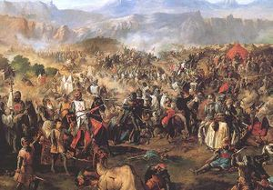
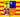
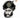
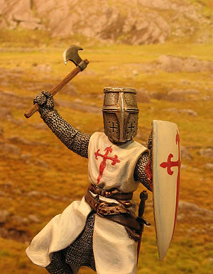
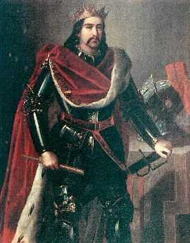
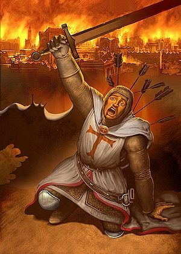
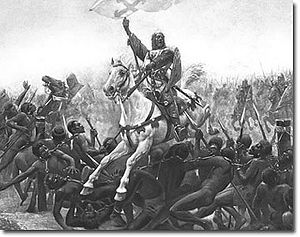
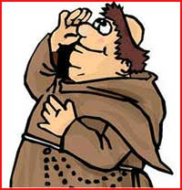

Batalla de Las Navas de Tolosa
 De: La Frikipedia, la enciclopedia extremadamente seria.
De: La Frikipedia, la enciclopedia extremadamente seria.
| De la serie conflictos armados:
|
| Batalla de Las Navas de Tolosa
|
| 
|
| Con razón se hacían un lío
|
|
| Lugar y fecha
|
Las Navas de Tolosa (¡sorpresa!), algún santo día de 1212
|
| Bandos
|
Triscianos
|
Sumulmanes
|
| Fuerzas
|
Castilla
 Aragón
Navarra
Leoneses buenos
Franceses buenos
Órdenes militares
|
 Moros
|
| Comandantes
|
Alfonso de Castilla
Sancho de Navarra
Pedro de Aragón
|
Mahoma, el incaricaturizable
Al-Nasir
|
| Armas
|
Caballeros enlatados
Catalanes y Jimenez Losantos
Dos caballeros
Milicianos baratos
Cruzados sanguinarios
Templarios fieros
|
1.200.000 moros armados hasta los dientes
|
| Bajas
|
Algunos valientes
|
1.200.000 moros muertos
|
| Resultado
|
Victoria mayúscula y decisivísima cristiana
|
La batalla de Las Navas de Tolosa fue una gran escaramuza entre caballeros enlatados del bando cristiano y jinetes moros sin casi ni escudos que tuvo lugar en 1212. Después de 400 añitos, los reyes cristianos, en vez de ir siempre a por el rey gordo de Aragón, que sabía luchar menos, decidieron unirse para rendirle cuentas a Al-Ándalus y a sus hordas de musulmanes y exigirles dos cosas: el pago de todo el dinero que les había robado el villano Al-Manzor, y que se fueran de España en las mismas pateras con las que habían llegado. El emir infiel, un tipo llamado Al-Nasir (El malo de la película), al enterarse de ello, organizó a un ejército más grande que el de Sauron en los Campos del Pellennor para conquistar Europa pasando por España. Más de uno de los cristianos comenzó a cagarse en los pantalones y pensó el pedirle ayuda a los franceses, que en cuestión de cruzadas eran expertos. Al final, una numerosa tropa internacional de voluntarios de muchos países (franceses, italianos, Alemanes, serbios, andorranos, chipriotas, suizos, venezolanos …), liderada por los caballeros Templarios y una tropa de obispos con garrotes, se unió a castellanos, catalanes, aragoneses y navarros y les dieron todos juntos una tunda a los moros malos, que huyeron a pie y corriendo hasta lanzarse al estrecho de Gibraltar y llegar nadando a Ceuta. Muchos caballeros
Templarios participaron sanguinariamente en esta batalla.
Preparación (ninguna)
Esta batalla fue organizada por el rey Alfonso de Castilla, el obispo de Toledo, que en sus años mozos había perdido varias batallas fáciles contra los moros, y hasta participó el Papa de Roma, que casi convenció a los otros dos de atacar Córdoba todos descalzos y sin espadas haciendo penitencia y comiendo yogures naturales. Los malos eran los almohades, grandes fabricantes de almohadas percusores de los Talibanes que mandaban en Al-Ándalus desde hacía varios años. El rey de Castilla había perdido una batalla decisiva contra los almohades hacia unos años, al calcular mal si Dios estaba mirando o no cuando atacaban. Los malvados almohades decidieron atacar de nuevo, y por eso, Alfonso VIII, corrió con el rabo entre las piernas a pedir socorro a los reinos de Navarra y Aragón, que rieron a carcajadas, sólo hasta que vieron llegar las hordas de malos por el sur con las cabezas de cien esclavos negros asadas en las puntas de sus lanzas. Después, Alfonsillo pidió ayuda al Papa, que deseaba darle bien el Islam. Los villanos eran liderados por el mismísimo demonio (Al-Nasir).
Bandos
El ejército cristiano del buen Dios estaba formado por:
- Las tropas castellanas de caballeros gordos y barbudos en armaduras de latón y con lanzas de plástico baratas (Don Quijote señor de la Mancha era uno de ellos, o al menos, le habría gustado serlo) al mando del rey Alfonso VIII de Castilla, el alma de la batalla y el que se supone debía dar las órdenes (gracias a Dios, no las dio y no pudo cagarla otra vez), junto con hordas mal armadas con garrotes, lanzas y hachas de milicias de Concejos Castellanos (pues los habitantes de castilla han tenido siempre fama de brutos, pero menos que los Vascos), entre ellas las de Medina del Campo, Madrid, Getafe, Soria, , Medinaceli, Móstoles, El Aeropuerto de Barajas y San Esteban de Gormaz Mayor. Eran muchos y constituían la créeme de la créeme de la carne de cañón. Su abanderado era Chiquito de la calzada, sexagésimo señor de Burronia.
- Las tropas de los reyes Sancho VII de Navarra (el Matamalos, llamado a veces, el Matamoros, aunque ese era el caballero Aznar), Pedro II de Aragón (el ultracatólico derechista) y Alfonso II de Portugal (que no sabía hablar catalán). Eran muchos también, pero tenían rencillas con los castellanos a causa de su oro y su moro. Los portugueses eran en realidad desertores que habían abandonado a su rey para ir a la caza de aventuras y moros, ya que el rey portugués era… ¡Medio judío!
 ¡A los moros les gustan las gafas fashion, esas sí que molan! ¡No quiero verte con ellas soldado!
- Curas y frailes típicos, de los calvos y con un bastón y la Biblia, predicando todo el rato como romperle el pescuezo a un moro.
- También había muchos caballeros barbudos y calvos armados con grandes espadas y hachas de las órdenes militares: Los Templarios, Los Hospitalarios, La Orden de Calatrava, la Legión, Los Rangers, El Delta Force... Estas tropas eran las más bestias y peligrosas, si no se tiene en cuenta que en la batalla lucharon famosos cazadores de infieles como El Capitán Trueno y el rey Sancho de Navarra.
- Un gran número de cruzados aventureros voluntarios provenientes de otros estados europeos , que habían llegado atravesando los Pirineos en armadura pesada y zampándose osos y algún cátaro de paso. Estos guerreros, en su mayoría franchutes, germanos y uzbekos llegaron atraídos por la llamada telefónica del Papa, que les había prometido muchos moros a los que descuajeringar con sus hachas y espadas largas.
 Nadie puede matar a un cruzado con sólo veinte flechas afiladas.
- También habían acudido a la cruzada muchos caballeros Leoneses desertores. El rey malo, feo, miserable, tacaño, traidor y comunista de León, aprovechó que los buenos heroicos se iban al sur y atacó varios castillos fronterizos de Castilla con sus pérfidos amigos: Juan Sin Tierra y el sheriff de Nottingham. Mientras tanto, todos los buenos cruzados cristianos iban al sur, bajo la promesa de poder pegar a los prisioneros y comerse la salchicha de moro. Los cobardes extranjeros, no obstante, después de arrasar dos castillos y violar a tres mujeres cada uno, desertaron y huyeron a sus casas con sus escuderos. Se fueron unos 30.000, pero gracias a Dios, llegaron 200 caballeros navarros que lograron reponer las bajas.
Malos (moros)
El ejército cristiano tenía un tamaño ciertamente respetable, pero el gran número de tropas convocadas por el Califa almohade Malvadísimo Al-Nasir ("El puto infiel" para los cristianos) hacía que todos los cristianos, curas incluidos, se cagaran en los calzones al ver tal tropa. Su tamaño fue enormemente minimizado por las crónicas cristianas, llegando a hablarse de sólo 300.000 a 400.000 hombres, si bien hoy en día se tiende a cifrar su número en algo más de 1.200.000.000 También tenían los muslimes infames muchas brigadas internacionales. Habían venido infieles de todos los rincones:
- Negros malos de Black Kawk Derribado armados con cimitarras y enterrados hasta la cintura alrededor del campamento enemigo, listos para hacer tortillas con los huevos de los cristianos.
- Milicias Valencianas:armados con sus F1 de una sola pasada a tropemiles kilómetros el segundo atropellaban alque se pusiera por alante.
- Tropas Sevillanas: las más letales, al acercarse al enemigo contaban chistes de Lepe y los caballeros cristianos se morian de risa.
- Hordas bárbaras de soldadillos marroquíes, que como siempre trataban de fastidiarnos. Esos eran muy poco peligrosos, más o menos como los orcos de Sauron.
- Escuadrones de Denia: los más chulos,hasta que veian a 100 metros un enemigo.
- Legiones de turcos, libios, egipcios y otros pueblos infieles, que venían desde muy lejos para asaltar Europa.
- Regulares desertores de Melilla, que se habían pasado a los moros.
- Imanes barbudos con turbantes, vacuos imitadores de Bin Laden, que durante todo el santo día arengaban a sus fieles tropas a no dejar ni un solo cristiano sin devorar.
La batalla
Los ejércitos cristianos llegaron después de perderse dos veces a las Navas de Tolosa. Allí se produjeron algunas broncas menores donde Chiquito demostró no saber si él era bueno a malo. Debido a estas pifias, los cristianos decidieron atacar sin comer, dormir, beber ni descansar, para así evitar deserciones. Los infieles estaban preparando la yihad que debía echar a los españoles de España. Los caballeros franceses, que creían que todo iba a ser un paseillo, depués de lo de Jerusalén, y pensaban hacer algún tipo de turismo, armaron una fiestecilla en pleno campo de batalla, con ostras, bullabesa y champán, pero les cayeron encima las hordas de infieles. Lo vieron dos exploradores del rey de Aragón, que se tomaron su tiempo para alertar a los demás y evitar así que los franceses les dieran una tunda más tarde en Occitania (cosa que pasó). Pero todo estaba planeado. Como ni a Navarros ni a Aragoneses les caían bien los franceses, los usaron como cebo para atraer a los malvadísimos.  El rey Sancho de Navarra se enfrenta a los negros malos de Black Hawk Derribado.
 Los curas gordos eran una parte importante de santo ejército cristiano.
Al ver como huían muchos cobardes, los tres reyes cristianos cargaron con muchos hombres. Y al verlos, los que huían se volvieron a animar y dieron media vuelta. Los milicianos baratos de Madrid se lanzaron en tromba contra los moros de las esquinas, siendo ayudados por los catalanes a hacer butifarras y carne picada de infiel. Los tres reyes iban a saco a por el mismo Al-Nasir. El rey Sancho Matamalos atravesó la última defesa: los negros malos de Black Hawk Derribado. Entonces, Sanchito rompió de una patada las cadenas que unían a los feos y malos negros. Pero el muslime jefe aún resistía, matando a todo cuanto le atacaba.
Sancho y sus navarros hicieron mucha carne picada de moro allí adentro. Entonces, los moros se lanzaron colina abajo huyendo para salvar al pellejo. Al-Nasir también se escapó. Todos los cristianos, curas incluidos, persiguieron a los sarracenos, matando a casi 500.000 a lo largo de 20 kilómetros. El botín de guerra fue grandísimo.
¡Ah! Bueno sí, consecuencias
Al perder la batalla, los cobardes moros malos huyeron hasta Ceuta y Melilla, y la Reconquista fue bastante rápida. Además, los prisioneros musulmanes fueron obligados a construir varios castillos, sólo unos doscientos, en la frontera. Había sido una buena batalla, aunque como en España el cine no es muy bueno, aún no se ha hecho ninguna película sobre ella, aunque no hace falta decir que sería buenísima.
Véase también
Autor(es):
- Nexo
- Jowsh
- Epikurolibre
- Hank
- Titvs
- Veni Vidi Vici
- Generibot
- Thelordg95
Frikipedia 2005-2016, Licencia
GFDL 1.2 - Extraído por FrikiLeaks